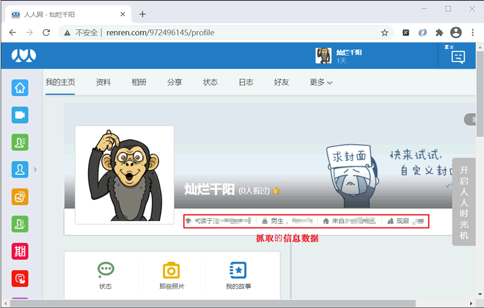
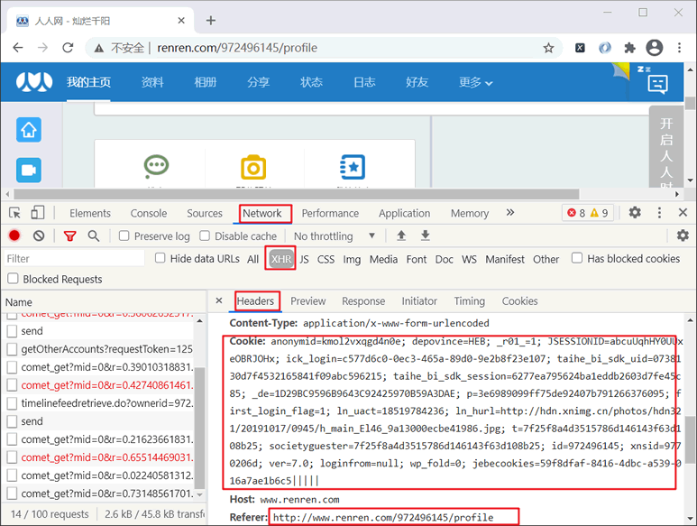

Python爬虫实现Cookie模拟登录
在使用爬虫采集数据的规程中，我们会遇到许多不同类型的网站，比如一些网站需要用户登录后才允许查看相关内容，如果遇到这种类型的网站，又应该如何编写爬虫程序呢？Cookie 模拟登录技术成功地解决了此类问题。
Cookie 是一个记录了用户登录状态以及用户属性的加密字符串。当你第一次登陆网站时，服务端会在返回的 Response Headers 中添加 Cookie， 浏览器接收到响应信息后，会将 Cookie 保存至浏览器本地存储中，当你再次向该网站发送请求时，请求头中就会携带 Cookie，这样服务器通过读取 Cookie 就能识别登陆用户了。
然后使用 F12 打开调试工具，刷新页面来抓取登录时的数据包（包名：timeline...开头）， 并在 Headers 选项中找到请求头中的 Cookie 信息，将 Cookie 值拷贝下来，以备后续使用。如下所示：
Cookie 是一个记录了用户登录状态以及用户属性的加密字符串。当你第一次登陆网站时，服务端会在返回的 Response Headers 中添加 Cookie， 浏览器接收到响应信息后，会将 Cookie 保存至浏览器本地存储中，当你再次向该网站发送请求时，请求头中就会携带 Cookie，这样服务器通过读取 Cookie 就能识别登陆用户了。
提示：我们所熟知的“记住密码”功能，以及“老用户登陆”欢迎语，这些都是通过 Cookie 实现的。
下面介绍如何实现 Cookie 模拟登录，本节以模拟登录人人网（http://life.renren.com/）为例进行讲解。注册登录
首先你要注册一个人人网的账号，注册过中要填写个人资料，以便后续抓取数据使用。注册成功后点击上方头像进入我的主页（或左侧主页选项卡），如下图所示：

图1：人人网主界面
图1：人人网主界面
然后使用 F12 打开调试工具，刷新页面来抓取登录时的数据包（包名：timeline...开头）， 并在 Headers 选项中找到请求头中的 Cookie 信息，将 Cookie 值拷贝下来，以备后续使用。如下所示：

图2：浏览Headers信息
图2：浏览Headers信息
分析网页结构
确定了 Cookie 信息后，接下来分析页面元素结构。通过调试工具审查如图 1 所示的个人信息栏，其元素结构如下：
<div id="operate_area" class="clearfix">
<div class="tl-information">
<ul>
<li class="school"><span>就读于电子科技大学</span></li>
<li class="birthday">
<span>男生</span>
<span>，7月7日</span>
</li>
<li class="hometown">来自北京西城区</li>
<li class="address">现居 北京</li>
</ul>
...
</div>
</div>
由此可知其 Xpath 表达式为：
r_school = parse_html.xpath('//*[@id="operate_area"]/div[1]/ul/li[1]/span/text()'
r_birthday = parse_html.xpath('//li[@class="birthday"]/span/text()')
home_info=parse_html.xpath('//*[@id="operate_area"]/div[1]/ul/li/text()')
编写完整程序
完成程序如下所示：
import requests
from lxml import etree
class RenrenLogin(object):
def __init__(self):
# 个人主页的url地址
self.url = 'http://www.renren.com/972496145/profile'
self.headers = {
# 将拷贝的cookie值放在此处
'Cookie':'anonymid=kmol2vxqgd4n0e; depovince=HEB; _r01_=1; ick_login=c577d6c0-0ec3-465a-89d0-9e2b8f23e107; taihe_bi_sdk_uid=0738130d7f4532165841f09abc596215; taihe_bi_sdk_session=6277ea795624ba1eddb2603d7fe45c85; _de=1D29BC9596B9643C92425970B59A3DAE; p=3e6989099ff75de92407b791266376095; first_login_flag=1; ln_uact=18519784236; ln_hurl=http://hdn.xnimg.cn/photos/hdn321/20191017/0945/h_main_El46_9a13000ecbe41986.jpg; t=7f25f8a4d3515786d146143f63d108b25; societyguester=7f25f8a4d3515786d146143f63d108b25; id=972496145; xnsid=9770206d; wpsid=15900539012757; ver=7.0; loginfrom=null; wp_fold=0; jebecookies=59f8dfaf-8416-4dbc-a539-016a7ae1b6c5|||||',
# 注意，useragent不能改变，否则cookie失效
'User-Agent':'Mozilla/5.0 (Windows NT 10.0; Win64; x64) AppleWebKit/537.36 (KHTML, like Gecko) Chrome/89.0.4389.90 Safari/537.36'
}
def get_html(self):
html = requests.get(url=self.url,headers=self.headers).text
self.parse_html(html)
def parse_html(self,html):
parse_html = etree.HTML(html)
r_school = parse_html.xpath('//*[@id="operate_area"]/div[1]/ul/li[1]/span/text()')
print(r_school)
r_birthday = parse_html.xpath('//li[@class="birthday"]/span/text()')
print(r_birthday)
home_info=parse_html.xpath('//*[@id="operate_area"]/div[1]/ul/li/text()')
item = {}
item['hometown'] = home_info[2].strip()
item['address'] = home_info[3].strip()
print(item)
if __name__ == '__main__':
spider = RenrenLogin()
spider.get_html()
最后关闭“人人网”网站，运行上述程序，其结果如下：
['就读于电子科技大学']
['男生', '，7月7日']
{'hometown': '来自 北京 西城区', 'address': '现居 上海'}
关注公众号「站长严长生」，在手机上阅读所有教程，随时随地都能学习。内含一款搜索神器，免费下载全网书籍和视频。

微信扫码关注公众号